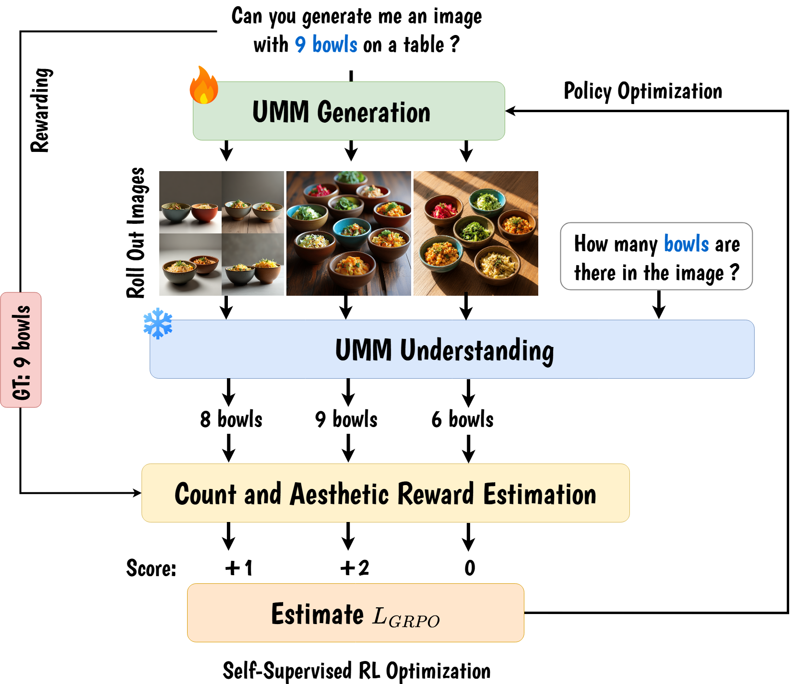

Anindya Mondal
We imagine what we understand.
We understand what we dare build.
— AnonymousI am a final-year PhD student at the Surrey Institute for People-Centred AI (CVSSP), University of Surrey, advised by Dr. Anjan Dutta, Dr. Xiatian Zhu, and Dr. Joaquin M. Prada, and in close collaboration with Dr. Sauradip Nag.
My research focuses on unified vision-language models that bridge visual understanding and controllable generation. I am interested in language-grounded visual perception, instance-level scene understanding, and count-faithful image synthesis, with the broader goal of building models that can precisely perceive and generate structured visual content from natural language without task-specific architectures or supervision.

News
Publications

TL;DR▾
Single unified 3B-parameter VLM that jointly solves object counting, crowd counting, referring-expression counting, and count-faithful image generation via density-aware adaptive zooming, MLLM attention-derived objectness maps, and a cycle-consistent GRPO strategy with nested local, boundary, and global rewards, achieving state-of-the-art across seven benchmarks without any benchmark-specific training.
TL;DR▾
Training-free diffusion pipeline with a VLM planner–critic loop: the planner generates structured instance layouts via chain-of-thought reasoning; the critic provides count and spatial feedback; instance-driven cross-attention masking with cumulative attention composition prevents semantic leakage across high-density scenes, reducing counting error by up to 57%.
TL;DR▾
Training-free multi-label counter coupling CLIP semantic embeddings for open-vocabulary category grounding with SAM point-prompt geometric priors for precise instance segmentation; introduces OmniCount-191, the first benchmark with point, bounding-box, and VQA multi-label count annotations.
TL;DR▾
Transformer decoder treating each action class as a multi-modal semantic query (CLIP visual + text embeddings), decoupling action classification from actor-specific pose topology for actor-agnostic multi-label recognition; state-of-the-art across five benchmarks spanning human and animal actions.
TL;DR▾
Encoder-decoder GNN (TimeGNN) trained with a composite loss of MSE and a Sobolev graph smoothness operator, exploiting spatio-temporal correlations across graph topology for robust missing-entry recovery on real sensor and traffic datasets.
TL;DR▾
Formulates missing wireless sensor data recovery as time-varying graph signal reconstruction minimising a Sobolev norm combining graph Laplacian smoothness across spatial and temporal dimensions, surpassing state-of-the-art by up to 54% at high missing-data rates.
TL;DR▾
Maps asynchronous event streams to a k-NN graph, applies graph Laplacian spectral decomposition for eigenvector-based clustering (GSCEventMOD), and determines the optimal cluster count via spectral gap analysis, enabling fully unsupervised moving object detection for event cameras.Education
-
PhD in Computer Vision and AI (2022 – Present)
University of Surrey, UK · CVSSP
Awards & Recognition
- AAAI 2025 Conference Travel Grant ($1,200) · Philadelphia, USA
- ICCV 2023 Conference Grant · Paris, France
- University of Surrey Postgraduate Studentship (2022–2025) · Full PhD funding
- Uplink Research Internship Award · ACM SIGKDD India Chapter
Teaching
-
Teaching Assistant (2023–2025) · University of Surrey
Academic Service
- Peer Reviewer: CVPR, ICCV, ECCV, NeurIPS, ICASSP, ICPR, IEEE TSP, IEEE TSIPN